I pezzi
della Light Core.
Ogni pezzo custom della Light Core con le lavorazioni che lo collegano ai vicini: fori delle guide e dei pattini, supporti delle viti, flange delle chiocciole, motori, interfaccia spalla ICD v4, ToolDock (rulli, sfere, pull-stud, clamp, porte e connettori). Le quote vengono dagli stessi parametri del mule e dalle posizioni reali dei componenti commerciali: un pezzo cambia solo cambiando light_params.py o standard_detail.py.
- Carrello X: le teste delle viti dei pattini X alti stanno sotto le guide Z (lamature profonde 4,5 mm): si montano prima i pattini X, poi le guide Z.
- Slitta Z: le viti esterne dei pattini Z stanno dietro le ali anteriori; fori d'accesso Ø9 attraverso le ali.
- BK/BF Z girati con la base verso il retro e avvitati a due piastre ponte sul carrello (mancavano nel mule).
- Motore X sulla testata della trave (o sulla spalla destra a piastra); piastra motore Y saldata sulla traversa di coda (10 mm).
- Telaio MC-BAS-001: un pezzo saldato (6 tubi + pad), distensionato e poi lavorato su pad, sedi guide Y e facce spalle.
- Clamp manuale ML-TD-003: albero a camma Ø12 trasversale nella master che tira la testa del pull-stud comune (≥ 0,5 kN, classe L, D016), leva sul fronte; le sedi del clamp automatico restano per il Platform Pack.
- Mount spindle: collare sul Ø52 con taglio e 2 × M5 (spindle ad aria, niente camicia).
ML-BAS-001 · Telaio basamento
6 pezzi · 5,22 kg dal CAD · BOM 2,00 kg · STEP della riga (coordinate HOME) ↓
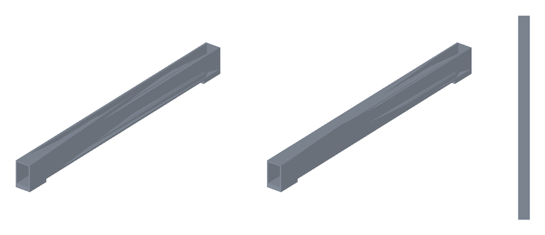
frame_longeron_L
40 × 700 × 68 mm · 1,12 kg · 27 superfici cilindriche
EN AW-6082 T6, tubi 40 × 60 / 120 × 60 sp. 4
saldato TIG, distensionato, fresato su pad, sedi guide Y e facce spalle
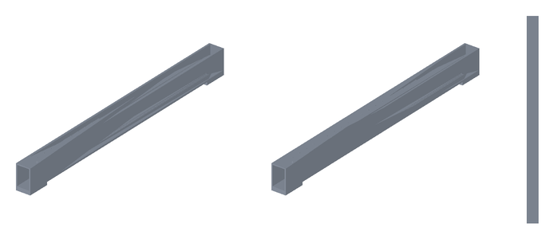
frame_longeron_R
40 × 700 × 68 mm · 1,12 kg · 27 superfici cilindriche
EN AW-6082 T6, tubi 40 × 60 / 120 × 60 sp. 4
saldato TIG, distensionato, fresato su pad, sedi guide Y e facce spalle
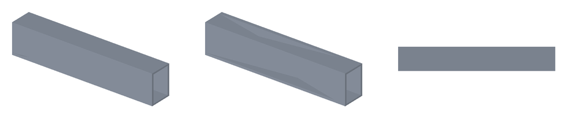
frame_cross_front
260 × 40 × 55 mm · 0,32 kg · 0 superfici cilindriche
EN AW-6082 T6, tubi 40 × 60 / 120 × 60 sp. 4
saldato TIG, distensionato, fresato su pad, sedi guide Y e facce spalle
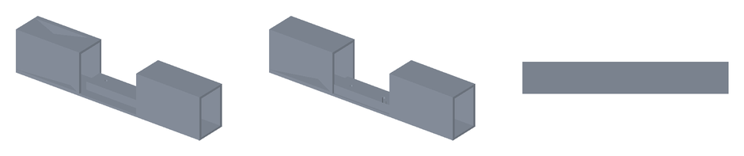
frame_cross_bf
260 × 40 × 55 mm · 0,30 kg · 2 superfici cilindriche
EN AW-6082 T6, tubi 40 × 60 / 120 × 60 sp. 4
saldato TIG, distensionato, fresato su pad, sedi guide Y e facce spalle
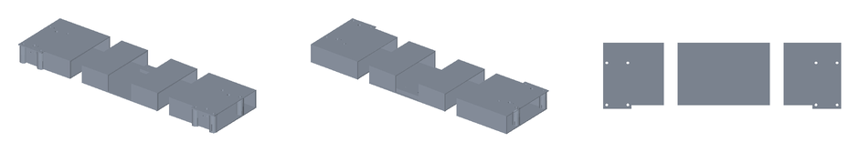
frame_cross_rear
672 × 188 × 55 mm · 2,03 kg · 30 superfici cilindriche
EN AW-6082 T6, tubi 40 × 60 / 120 × 60 sp. 4
saldato TIG, distensionato, fresato su pad, sedi guide Y e facce spalle
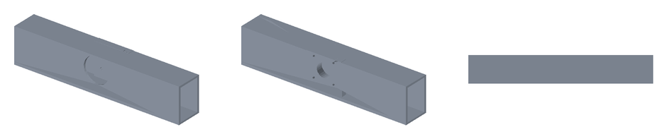
frame_cross_end
260 × 40 × 56 mm · 0,35 kg · 7 superfici cilindriche
EN AW-6082 T6, tubi 40 × 60 / 120 × 60 sp. 4
saldato TIG, distensionato, fresato su pad, sedi guide Y e facce spalle
ML-GAN-001 · Trave gantry
1 pezzi · 2,38 kg dal CAD · BOM 1,10 kg · STEP della riga (coordinate HOME) ↓
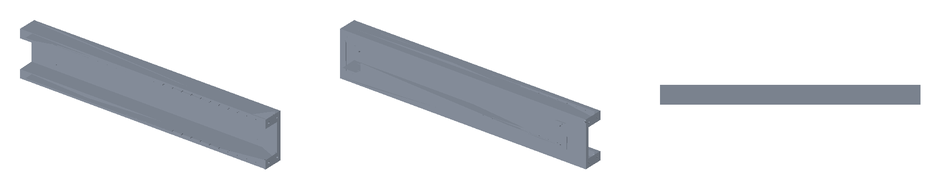
beam
660 × 50 × 120 mm · 2,38 kg · 62 superfici cilindriche
EN AW-6082 T6, piatti 6 + blocchi pieni
saldato, distensionato, fresato su faccia guide X e canale vite
ML-GAN-002 · Spalle gantry
2 pezzi · 1,80 kg dal CAD · BOM 1,00 kg · STEP della riga (coordinate HOME) ↓
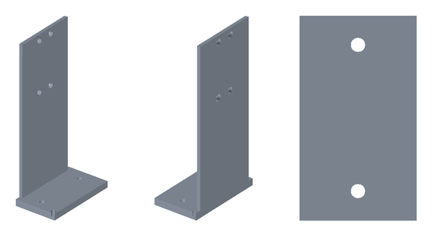
upright_L
80 × 140 × 297 mm · 0,90 kg · 10 superfici cilindriche
EN AW-6082 T6, piatti 6 + flangia 16
saldato e fresato; fori spine Ø10 H7 alesati
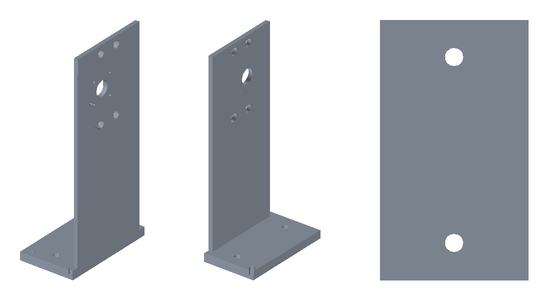
upright_R
80 × 140 × 297 mm · 0,90 kg · 15 superfici cilindriche
EN AW-6082 T6, piatti 6 + flangia 16
saldato e fresato; fori spine Ø10 H7 alesati
ML-Z-001 · Piastra asse Z
1 pezzi · 0,49 kg dal CAD · BOM 0,30 kg · STEP della riga (coordinate HOME) ↓
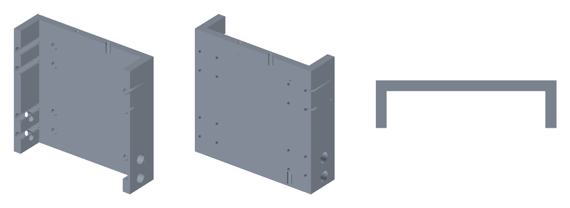
z_slide
136 × 36 × 130 mm · 0,49 kg · 52 superfici cilindriche
EN AW-6082 T651, piastra 50
fresato dal pieno
ML-TBL-001 · Tavola Y / tooling plate
1 pezzi · 2,18 kg dal CAD · BOM 2,00 kg · STEP della riga (coordinate HOME) ↓
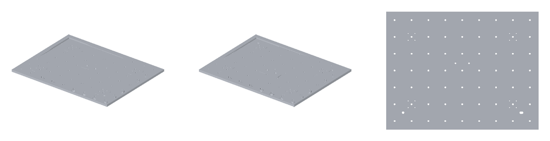
table
450 × 350 × 9 mm · 2,18 kg · 163 superfici cilindriche
EN AW-5083 piastra rettificata 10
fresata: tasche fra i boss, sedi inserti M6, boccole R1/R2
ML-SP-003 · Spindle mount
1 pezzi · 0,33 kg dal CAD · BOM 0,25 kg · STEP della riga (coordinate HOME) ↓
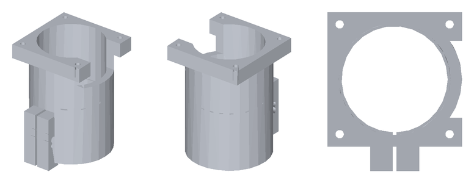
head_mount
66 × 78 × 92 mm · 0,33 kg · 14 superfici cilindriche
EN AW-6082 T6
tornito e fresato; Ø45 H6 alesato, gole O-ring
ML-TD-001 · Master kinematic plate
1 pezzi · 0,61 kg dal CAD · BOM 0,55 kg · STEP della riga (coordinate HOME) ↓
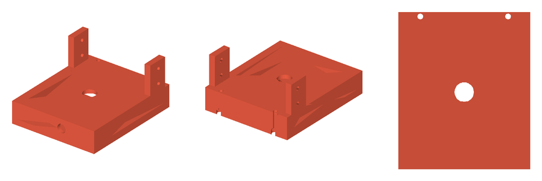
tooldock_master
120 × 143 × 70 mm · 0,61 kg · 34 superfici cilindriche
EN AW-7075 T651
fresato; sedi rulli rettificate, piano di accoppiamento lappato
ML-TD-002 · Base spindle receiver
1 pezzi · 0,26 kg dal CAD · BOM 0,30 kg · STEP della riga (coordinate HOME) ↓
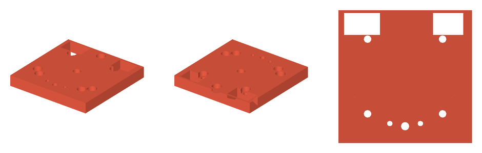
head_receiver
96 × 96 × 12 mm · 0,26 kg · 17 superfici cilindriche
EN AW-7075 T651
fresato; sedi sfere e piano di accoppiamento lappati
ML-TD-003 · Clamp manuale
3 pezzi · 0,17 kg dal CAD · BOM 0,35 kg · STEP della riga (coordinate HOME) ↓
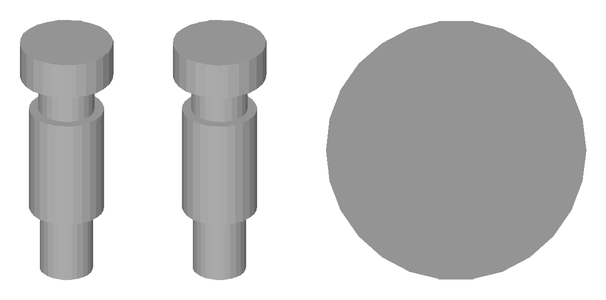
td_pull_stud
15 × 15 × 41 mm · 0,03 kg · 4 superfici cilindriche
42CrMo4 bonificato
tornito e rettificato; comune a tutte le teste (ICD v4)
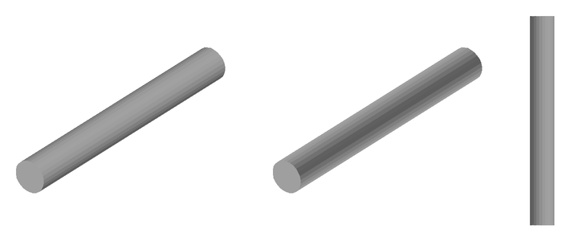
td_cam_shaft
12 × 102 × 12 mm · 0,09 kg · 1 superfici cilindriche
EN AW-6082 T6
fresato
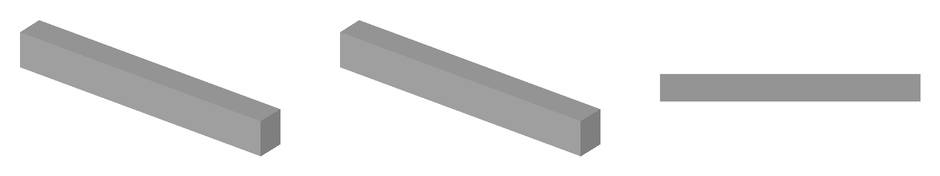
td_cam_lever
76 × 8 × 10 mm · 0,05 kg · 0 superfici cilindriche
EN AW-6082 T6
fresato
Accessori (fuori dai totali)
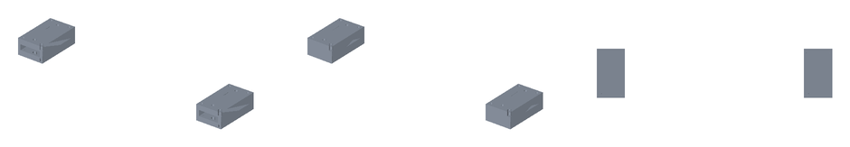
ML-RS-001 · Rialzi spalle +50 mm
Dettaglio: ICD v4 §5 sopra e sotto (2 spine Ø10 H7 + 4 M8 su 120 × 60); fondo filettato, cielo passante con finestra d'accesso.
672 × 140 × 50 mm · 2,1 kg
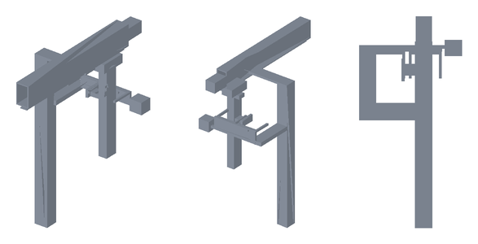
MC-TD-006 · Magazine 2 posti + trasferitore
Layout, non fabbricazione: colonna sulla spalla destra, navetta a 2 posti (passo 130), asse Y del trasferitore sopra la colonna, carro Z, braccio X e forcella fino al dock a X 440; camma di sgancio 3:1 (D016). Guide e motori TARGET.
364 × 750 × 879 mm · massa n.d. (solidi di layout)
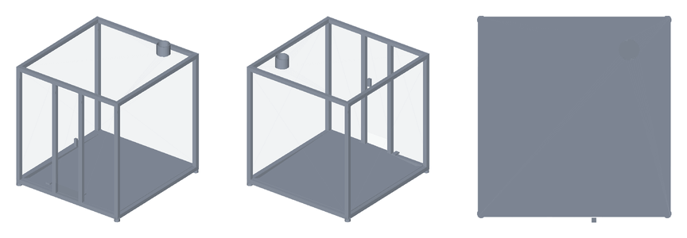
MC-ENC-001 · Cabina
Telaio 30 × 30 con piedi propri, agganciato al basamento e mai al ponte (D025); pannelli PC 4 mm, porta con interlock, vasca trucioli sotto i piedi della macchina, aspirazione Ø100; racchiude anche magazine e trasferitore.
941 × 1.001 × 1.068 mm · 37,2 kg
Viteria e minuteria
Compilata dalle lavorazioni (riga BOM MC-HW-001). Lunghezze MULE, da verificare in assieme reale.
| Norma | Articolo | Q.tà | Dove |
|---|---|---|---|
| ISO 4762 | M3×12 | 16 | pattini Y |
| ISO 4762 | M3×12 | 50 | rotaie Y → longheroni (filetto nel pad) |
| ISO 4762 | M3×16 | 16 | pattini X |
| ISO 4762 | M3×16 | 16 | pattini Z |
| ISO 4762 | M3×20 | 4 | motore X (con dado) |
| ISO 4762 | M3×20 | 4 | motore Y (con dado) |
| ISO 4762 | M3×20 | 4 | motore Z (con dado) |
| ISO 4762 | M3×20 | 50 | rotaie X → trave |
| ISO 4762 | M3×20 | 22 | rotaie Z → carrello X |
| ISO 4762 | M4×16 | 18 | flangia chiocciola SFU1204 → staffa |
| ISO 4762 | M5×20 | 2 | BF10 Z → piastra ponte |
| ISO 4762 | M5×20 | 2 | BK10 Z → piastra ponte |
| ISO 4762 | M5×20 | 2 | staffa chiocciola Y → tavola (dall'alto) |
| ISO 4762 | M5×25 | 2 | collare del mount spindle (orecchia) |
| ISO 4762 | M5×25 | 8 | piastra ponte Z → carrello |
| ISO 4762 | M5×25 | 4 | receiver → mount spindle |
| ISO 4762 | M5×25 | 2 | staffa chiocciola X → carrello (dal fronte) |
| ISO 4762 | M5×25 | 2 | staffa motore Z → torre carrello |
| ISO 4762 | M5×30 | 2 | piastrina chiocciola Z → slitta |
| ISO 4762 | M5×40 | 2 | BF10 X → spessori → trave |
| ISO 4762 | M5×40 | 2 | BK10 X → spessori → trave |
| ISO 4762 | M5×45 | 2 | BF10 Y → traversa |
| ISO 4762 | M5×45 | 2 | BK10 Y → traversa |
| ISO 4762 | M5×50 | 2 | master → bordo inferiore slitta (dal piano di accoppiamento) |
| ISO 4762 | M6×20 | 4 | sella master → ala slitta |
| ISO 4762 | M6×20 | 4 | spalla L → testata trave |
| ISO 4762 | M6×20 | 4 | spalla R → testata trave |
| ISO 4762 | M8×80 | 4 | spalla L → basamento, dal basso attraverso la traversa (ICD §5) |
| ISO 4762 | M8×80 | 4 | spalla R → basamento, dal basso attraverso la traversa (ICD §5) |
| O-ring NBR 70 | O-ring 8 × 1,5 / 6 × 1,5 | 3 | porte aria/fluido ToolDock |
| albero a camma rettificato | Ø12 × 110 | 1 | clamp manuale ToolDock |
| boccola di riferimento temprata | Ø8 H7 × 10 | 2 | tavola R1 / R2 |
| fissaggio connettore | secondo scheda | 2 | connettore data (metà testa e metà macchina) |
| fissaggio connettore | secondo scheda | 2 | connettore hybrid (metà testa e metà macchina) |
| grano di arresto leva | M6 × 10 | 1 | clamp manuale ToolDock |
| inserto filettato acciaio (filetto utile 9 mm) | M6 × 12 | 63 | tavola (ICD §4) |
| piede antivibrante M10 | M10 | 4 | piedi telaio |
| sfera 100Cr6 | Ø10 G10 | 3 | receiver (incollata / piantata) |
| spina ISO 8734 | Ø10 m6×24 | 2 | spalla L → basamento (ICD §5) |
| spina ISO 8734 | Ø10 m6×24 | 2 | spalla R → basamento (ICD §5) |
| spina ISO 8734 | Ø6 m6×20 | 2 | master ↔ slitta (riferimento) |
| spina rettificata DIN 6325 (rullo) | Ø8 × 12 | 6 | master ToolDock |
Rigenerare
python tools/cad/standard_parts.py --base light (poi standard_assembly.py per assieme, controlli e pagina CAD). STEP in coordinate locali: angolo minimo del pezzo nell'origine; lo STEP di ogni riga BOM tiene le coordinate macchina in HOME.